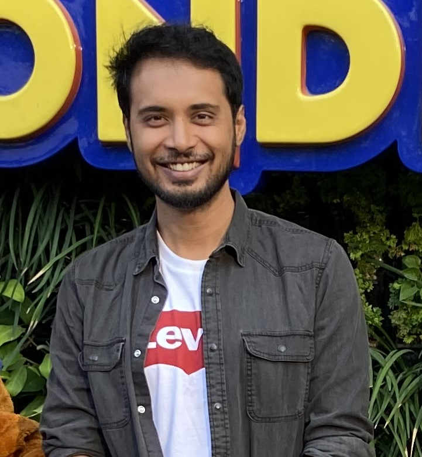

|
Ayush Singh
AI Research Scientist with 2 years of experience building multimodal systems for video understanding, retrieval-augmented reasoning, and legal intelligence.
I work on practical and research-driven AI systems that combine language models, vision-language models, structured reasoning, and retrieval to solve complex real-world problems. My recent work spans long-video understanding and contract compliance reasoning, with a focus on making models more compositional, interpretable, and effective in high-context settings.
This page is the first version of my portfolio and will continue to grow with more projects, publications, and research updates.
Email /
Resume /
LinkedIn
|

|
Research
My interests lie in multimodal AI, long-context reasoning, retrieval-augmented generation, video understanding, and applied NLP. I am especially interested in systems that combine neural models with structured representations such as graphs, memories, and explicit reasoning programs to improve robustness and interpretability.
|
WACV 2026
Video Understanding
|
RAVU: Retrieval-Augmented Video Understanding with Compositional Reasoning over Graph
Sameer Malik, Ayush Singh, Moyuru Yamada, Dishank Aggarwal
WACV, 2026
paper
RAVU introduces a retrieval-augmented framework for long-video understanding that builds a spatio-temporal graph memory and performs compositional reasoning over it to retrieve the most relevant evidence frames for question answering.
|
EACL 2026
Legal Reasoning
|
COMPACT: Building Compliance Paralegals via Clause Graph Reasoning over Contracts
Ayush Singh, Dishank Aggarwal, Pranav Bhagat, Ainulla Khan, Sameer Malik, Amar Prakash Azad
EACL, 2026
paper
COMPACT studies contract compliance verification through clause-graph reasoning, introducing a structured framework for cross-clause legal reasoning and the ACE benchmark for enterprise compliance scenarios.
|
Experience Snapshot
I work as an AI Research Scientist and build research-led systems across multimodal understanding, retrieval, reasoning, and applied machine learning. This section can later be expanded with a fuller timeline of roles, collaborations, and product or research impact.
|
|